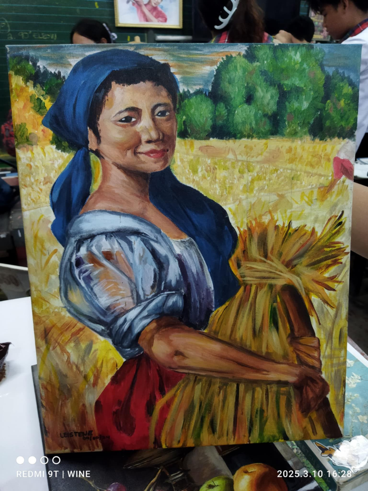
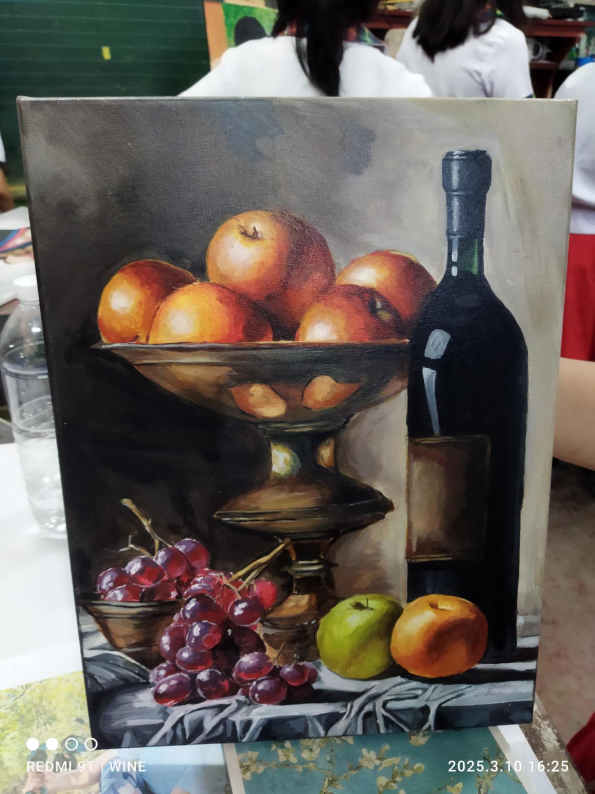
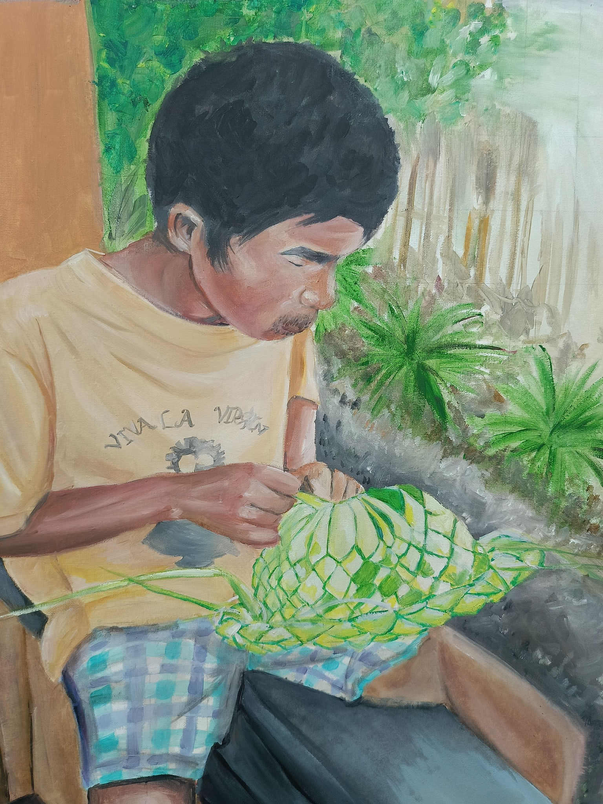

Visual art class is a creative and hands-on subject where students explore the exciting world of drawing and painting. It provides a space for students to express themselves visually, turning their thoughts, ideas, and emotions into works of art using simple materials like pencils, charcoal, watercolors, and acrylic paints.
In this class, students learn fundamental techniques such as shading, blending, color mixing, composition, and perspective, helping them improve both their technical skills and their creative confidence. As they practice, they discover how different lines, shapes, colors, and textures work together to create meaning and visual impact in their artwork.
Beyond developing artistic techniques, visual art class also introduces students to the history of art, exploring the works of famous artists and learning how art has evolved over time. Students gain a deeper understanding of how artists from different cultures and time periods used drawing and painting to tell stories, express beliefs, and capture the world around them.
Visual art class is not only about making beautiful pictures — it’s also about creativity, critical thinking, and personal expression. Students are encouraged to experiment, take risks, and develop their own unique artistic voice. Whether they are beginners or experienced young artists, this class helps all students appreciate the power of visual art and how it connects to the world they live in.
Here are some of my artworks
Artwork: Painting #1
Artwork: Painting #2
Artwork: Painting #3
